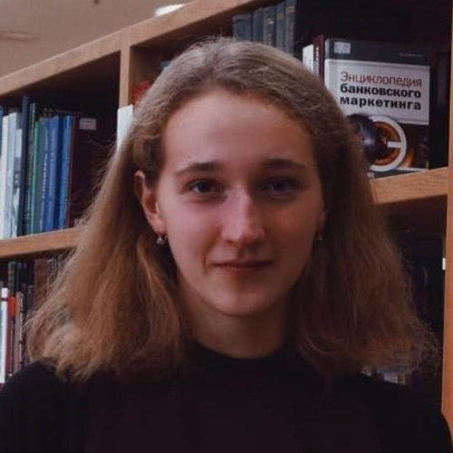
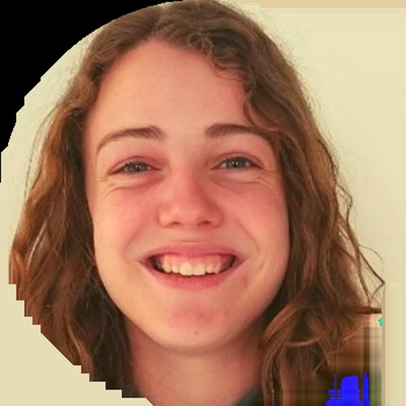
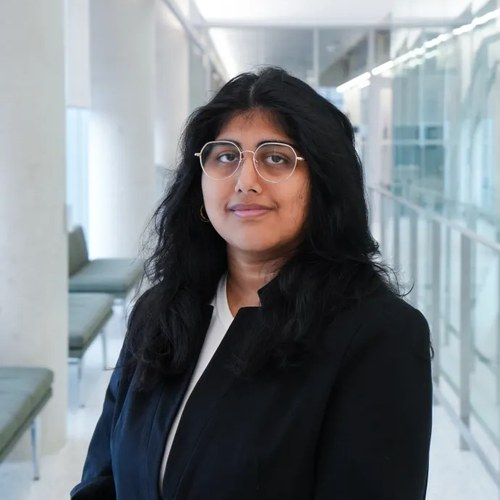

People
Our team
A transdisciplinary group of scientists and trainees spanning genomics, neuroimaging, biostatistics, computer science, and clinical research.
Principal Investigator
 DF
DFDaniel Felsky, PhD
Principal Investigator · Scientist, KCNI-CAMH
Associate Professor, Department of Psychiatry & Division of Biostatistics (Dalla Lana School of Public Health), University of Toronto. Develops whole-person, multi-modal models of mental illness and brain aging.
Postdoctoral Fellows
 ET
ETEarvin Tio
Postdoctoral Fellow
Suicide risk & whole-person machine learning
 MA
MAMohamed Abdelhack
Postdoctoral Fellow
MRI, sleep, cognition & bipolar disorder
 SE
SESamar Elsheikh
Postdoctoral Fellow
Polygenic scores & antidepressant response in late-life depression
 MG
MGMai Gamal
Incoming Postdoctoral Fellow
Neural correlates of social factors (CDiA)
Graduate Students
 AL
ALTianyi (Amanda) Liu
PhD · IMS
snRNA-seq + polygenic scores for bipolar disorder

PLPolina Lekhnitskaya
PhD · IMS
Language deficits, neurodegeneration & TBI
FN
Fardin Nabizadeh
Incoming PhD · IMS
Tau pathology spreading in Alzheimer's disease
 MP
MPMary Anne Panoyan
PhD (co-supervised)
Tandem repeats & nicotine use
 AM
AMAshley Moo-Choy
PhD (co-supervised)
Population & statistical genetics
 EW
EWEmily Wiljer
MSc · IMS
Cognitive resilience & KLOTHO
 HL
HLHongrui Liu
MSc · IMS
Gut-immune-brain axis in neurodegeneration
 TA
TATesam Ahmed
MSc · IMS
Imaging-genetics of psychosis-spectrum symptoms
 AM
AMAnna Mouzenian
MSc · IMS (co-supervised)
Accelerometry & sleep in addictions

RVRivka Van Klei
MSc · IMS
Polygenic scores for brain change & resilience
 IC
ICIsabella Chawrun
PhD · UWaterloo
Autism in adulthood & machine learning
 TH
THTara Henechowicz
PhD · UofT
Music engagement, neuromotor traits & PRS
 YT
YTYuan Tian
PhD · UofT
Multimodal neuroimaging & GWAS in Alzheimer's
Research Staff & Undergraduate Trainees

ASAyesha Syeda
Research Assistant
Multimodal classification of treatment-resistant late-life depression
Megan Ding
Undergraduate · BCB430
Single-cell transcriptomic risk scores for depression
AW
Amelia Wu
Undergraduate · BCB330
Machine learning & digital twins for lifespan risk
 LK
LKLucy Kang
Undergraduate · BCB330
Research placement
 FS
FSFeiyang Sun
Undergraduate
Blood biomarkers in youth (TAY)
Alumni
Postdoctoral Fellows
- Stuart Matan-Lithwick 2021-2024
- Sejal Patel 2021-2022
- Peter Zhukovsky
Doctoral Students
- Akshay Mohan
Master's Students
- Denise Sabac 2022-2024
- Mu Yang 2022-2023
- Rachel Bercovitch 2022-2023
- Amin Kharaghani 2019-2022
- Alyssa Cannitelli 2021
- Katrina Hueniken 2020-2021
Doctor of Medicine Students
- Ben Khoo 2023
- Roberta Dolling-Boreham 2021
Undergraduate Students
- Alameen Salim 2024
- Lu (Evelyn) Huang 2024
- Angela Uzelac 2023-2024
- Jun Ni (Jenny) Du 2022-2023
- Yihan (Cathlyn) Chen 2022-2023
- Micaela Consens 2019-2021
- Wing Chung (Jessie) Lam 2020-2021
- Bianca Pokhrel 2020-2021
Research Analysts
- Melissa Misztal 2022-2024
- Milos Milic 2020-2022
Join us. The lab is currently recruiting a graduate student or postdoc for the
BAARD study on treatment-resistant late-life depression. If you are interested in whole-person
modeling of brain and mental health, reach out at
daniel.felsky@camh.ca.